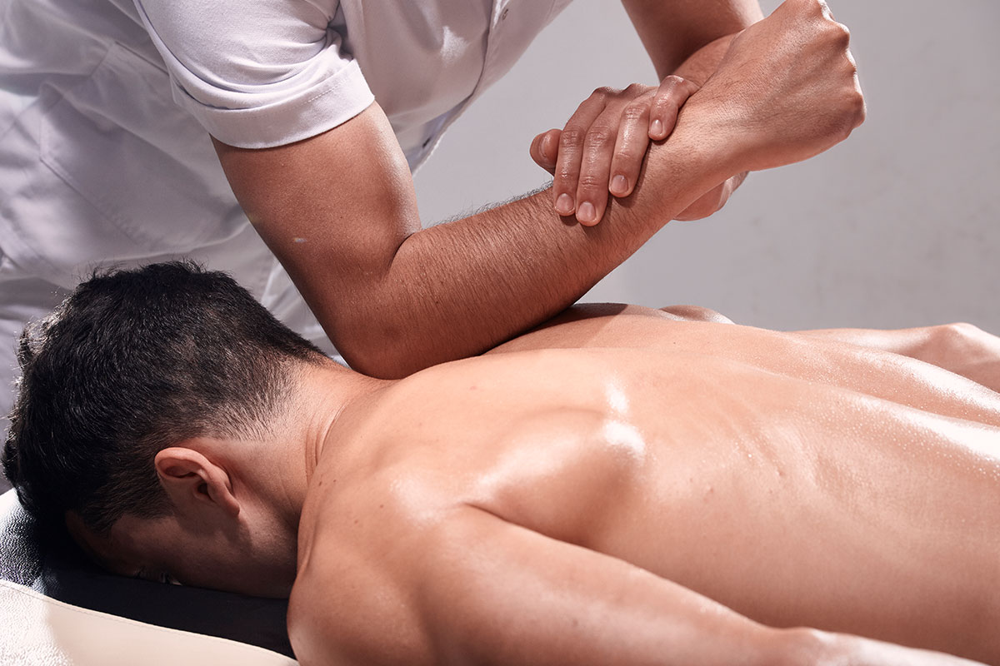
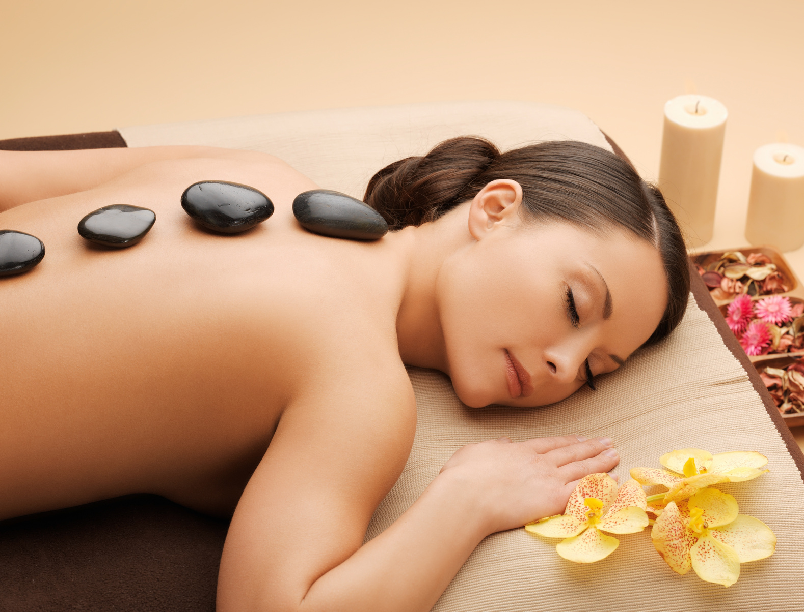
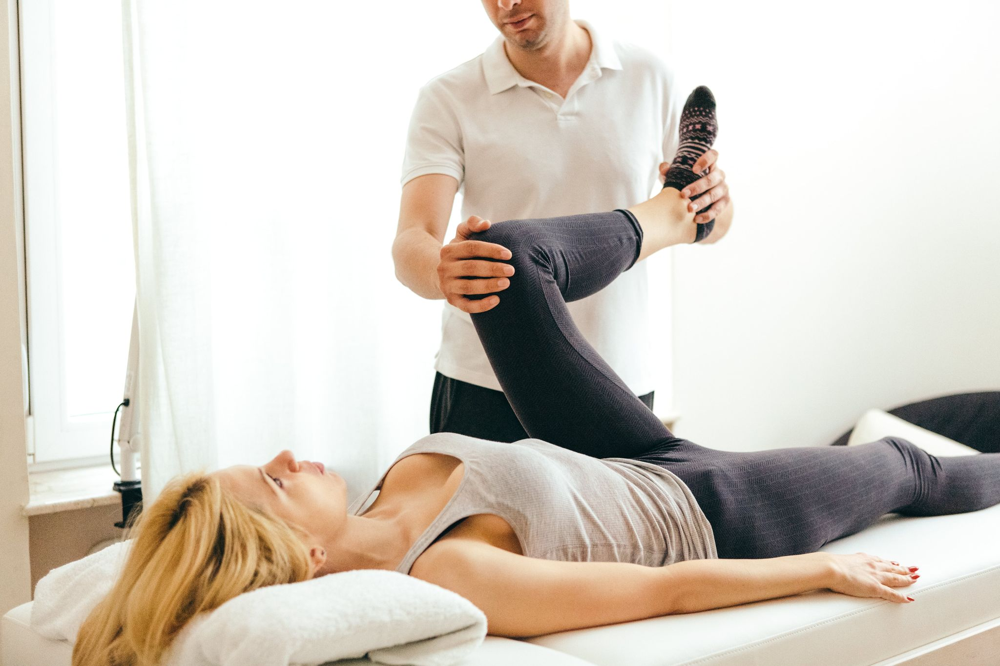

| Deep Tissue Massage | Price: $230 |
|---|
Experience a deep tissue massage at our tranquil spa sanctuary, designed to alleviate tension, soothe sore muscles, and restore balance. A skilled massage therapist will conduct a consultation to understand your specific needs and areas of concern, addressing chronic muscle tension, sports-related injuries, or daily life stress. The therapist will apply a blend of aromatic oils, using firm pressure and slow strokes to penetrate deeper layers of muscle tissue, targeting areas of tension and releasing built-up knots. The massage may involve some discomfort, but the therapist will work within your comfort level for a safe and effective treatment. Communication is key throughout the massage, and stretching techniques and joint mobilization may be included to enhance flexibility. The massage promises to leave you feeling refreshed, restored, and ready to take on the world.

| Soft Stone Massage | Price: $230 |
|---|
Soft Stone Massage is a unique and deeply relaxing experience that combines the benefits of traditional hot stone massage with a gentle touch. The massage begins with the selection of heated stones strategically placed along the body's energy centers, creating a sensation of warmth and comfort. The therapist then applies aromatic oils, releasing tension and promoting balance. The stones glide effortlessly over the skin, soothing tired muscles and calming the mind. The therapist may incorporate elements of traditional massage therapy, such as Swedish massage or aromatherapy, to enhance the experience. The massage leaves the recipient feeling rejuvenated, refreshed, and rejuvenated.

| Sports Massage | Price: $335 |
|---|
Our sports massage offers tailored therapy to enhance athletic performance, prevent injury, and promote recovery. Whether you're a professional athlete or a weekend warrior, our therapists are dedicated to supporting your journey to optimal wellness and athletic achievement. Our state-of-the-art facilities provide specialized equipment and amenities to meet the unique needs of athletes at every level. Before your massage, you'll discuss your specific goals, concerns, and areas of focus with your knowledgeable therapist. Using targeted techniques like deep tissue massage, myofascial release, and trigger point therapy, the therapist releases tension, restores mobility, and optimizes muscle function. Communication is key throughout the massage, and stretching and mobility exercises may be included to further enhance flexibility. The ultimate goal is to elevate your game and help you achieve fitness goals with confidence and ease.